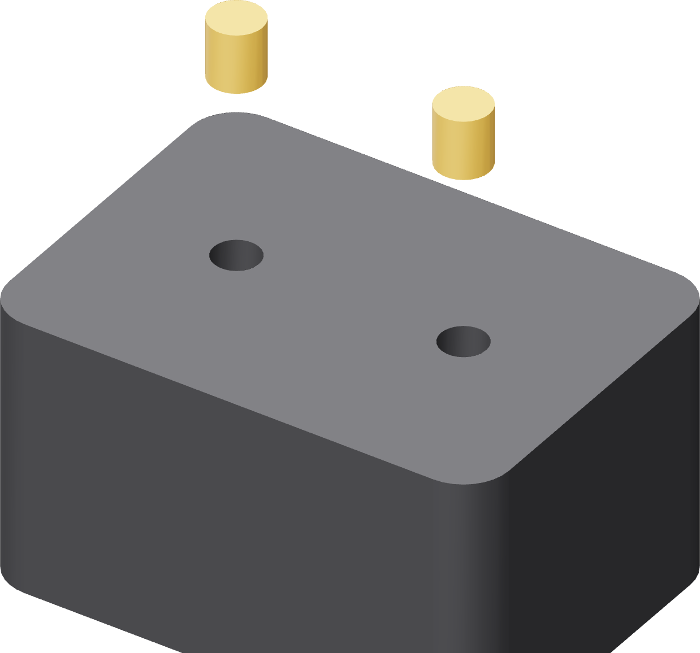

Thirty-seven inserts
Six M5 and thirty-one M3, all brass heat-set, all pressed before any part meets another part. Do them all in one sitting with the iron already hot.

How each one goes in
- Iron to temperature with the matching insert tip fitted.
- Sit the insert on its bore, knurl down.
- Bring the tip down straight and let the insert sink under the iron's own weight. Do not push.
- Stop when the rim is level with the face. Lift the iron off and leave it alone for twenty seconds.
| Where | Count | Size | Direction |
|---|---|---|---|
| Base — tower and ground-tower stations | 6 | M5 × 9.5 | Down into the top face |
| Turntable — underside | 6 | M3 short | Up into the flat underside |
| Turntable — nest register face | 3 | M3 short | Down |
| Nest — outer collar | 3 | M3 short | Inward, from the outside face |
| Motor tower — rail tops | 4 | M3 short | Down |
| Motor carriage — two outside walls | 4 | M3 short | Inward |
| Ground tower — top | 2 | M3 short | Down |
| Ground arm — clamp jaw outside face | 1 | M3 short | Inward |
| Base feet — two per foot | 8 | M3 short | Down into the top of each foot |
Torque, later
A ruthex insert's grip on this stock gives out well below what a 12.9 M3 or a drill's lowest clutch click will deliver. Every screw that lands in one of these inserts goes in on the HOTO PixelDrive at its 0.5 N·m setting or by hand. The torque the tool will not exceed is the spec that matters here.